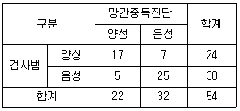

산업위생관리기사 (2012-08-26 기출문제)
1과목: 산업위생학개론
1. 다음 중 주로 여름과 초가을에 흔히 발생되고 강제기류 난방장치, 가습장치, 저수조 온수장치 등 공기를 순환시키는 장치들과 냉각탑 등에 기생하여 실내ㆍ외로 확산되어 호흡기 질환을 유발시키는 세균은?
- 푸름곰팡이
- 나이세리아균
- 바실러스균
- 레이오넬라균
(정답률: 95%)

2. 다음 중 근로자 건강진단실시 결과 건강관리구분에 따른 내용의 연결이 틀린 것은?
- R : 건강관리상 사후관리가 필요 없는 근로자
- C1 : 직업성 질병으로 진전될 우려가 있어 추적검사 등 관찰이 필요한 근로자
- D1 : 직업성 질병의 소견이 보여 사후관리가 필요한 근로자
- D2 : 일반 질병의 소견이 보여 사후관리가 필요한 필요한 근로자
(정답률: 82%)
3. 다음 중 산업안전보건법령상 작업환경측정에 관한 내용으로 틀린 것은?
- 모든 측정은 개인시료채취방법으로만 실시하여야 한다.
- 작업환경측정을 실시하기 전에 예비조사를 실시하여야 한다.
- 작업환경측정자는 그 사업장에 소속된 자로서 산업위생관리산업기사 이상의 자격을 가진 자를 말한다.
- 작업이 정상적으로 이루어져 작업시간과 유해인자에 대한 근로자의 노출정도를 정확히 평가할 수 있을 때 실시하여야 한다.
(정답률: 95%)
4. TLV-TWA가 설정되어 있는 유해물질 중에는 독성자료가 부족하여 TLV-STEL이 설정되어 있지 않은 물질이 많다. 이러한 물질에 대해서는 적절한 단시간 상한치(excursion limits)를 설정하여야 하는데 다음 중 근로자 노출의 상한치와 노출시간의 연결이 옳은 것은? (단, ACGIH의 권고기준이다.)
- TLV-TWA의 3배 : 30분 이하
- TLV-TWA의 3배 : 60분 이하
- TLV-TWA의 5배 : 5분 이하
- TLV-TWA의 5배 : 15분 이하
(정답률: 85%)
5. 다음 중 사고예방대책의 기본원리 5단계를 올바르게 나열한 것은?
- 조직 → 사실의 발견 → 분석 → 대책의 선정 → 대책 실시
- 사실의 발견 → 조직 → 분석 → 대책의 선정 → 대책 실시
- 조직 → 분석 → 사실의 발견 → 대책의 선정 → 대책 실시
- 사실의 발견 → 분석 → 조직 → 대책의 선정 → 대책 실시
(정답률: 92%)
6. MPWC가 17.5kcal/min인 사람이 1일 8시간 동안 물건 운반 작업을 하고 있다. 이때 작업대사량(에너지소비량)이 8.75kcal/min이고, 휴식할 때 평균대사량이 1.7kcal/min이라면, 지속작업의 허용시간은 약 몇 분인가? (단, 작업에 다른 두 가지 상수는 3.720, .01949를 적용한다.)
- 88분
- 103분
- 319분
- 383분
(정답률: 66%)
7. 1994년 ABIH(American Board of Industrial Hygiene)에서 채택된 산업위생전문가의 윤리강령 내용으로 적절하지 않은 것은?
- 산업위생 활동을 통해 얻은 개인 및 기업의 정보는 누설하지 않는다.
- 전문적 판단이 타협에 의하여 좌우될 수 있거나 이해관계가 있는 상황에는 개입하지 않는다.
- 쾌적한 작업환경을 만들기 위해 산업위생이론을 적용하고 책임 있게 행동한다.
- 과학적 방법의 적용과 자료의 해석에서 경험을 통한 전문가의 주관성을 유지한다.
(정답률: 94%)
8. 다음 중 턱뼈의 괴사를 유발하여 영국에서 사용 금지된 최초의 물질은 무엇인가?
- 황린(Yellow Phosphorus)
- 적린(Red Phosphorus)
- 벤지단(Benzidine)
- 청석면(crocidolite)
(정답률: 59%)
9. 다음 중에서 피로물질이라 할 수 없는 것은?
- 크레아틴
- 젖산
- 글리코겐
- 초성포도당
(정답률: 67%)
10. 다음 중 산업안전보건법령상 보건관리자의 자격에 해당하지 않는 사람은?
- 「의료법」에 따른 의사
- 「의료법」에 따른 간호사
- 「국가기술자격법」에 따른 산업안전기사
- 「산업안전보건법」에 따른 산업위생지도사
(정답률: 88%)
11. 다음 중 수근터널증후군(CTS : Carpal Tunnel Syndrome)이 가장 발생하기 쉬운 직업은?
- 대형 버스 운전
- 조선소의 용접작업
- 항만, 공항의 물건 하역작업
- 드라이버(driver)를 이용한 기계조립
(정답률: 79%)
12. 다음 중 산업위생의 목적과 가장 거리가 먼 것은?
- 근로자의 건강을 유지 증진시키고 작업능률을 향상
- 근로자들의 육체적, 정신적, 사회적 건강 유지 및 증진
- 유해한 작업환경 및 조건으로 발생한 질병의 진단과 치료
- 최적의 작업환경 및 작업조건으로 개선하여 질병을 예방
(정답률: 90%)
13. 다음 중 직업병 예방을 위한 대책으로 가장 나중에 적용하여야 하는 방법은?
- 격리 및 밀폐
- 개인보호구의 지급
- 환기시설 등의 설치
- 공정 또는 물질의 변경, 대치
(정답률: 88%)
14. 다음 중 호기성 산화를 촉진시켜 근육의 열량 공급을 원활히 해주는 비타민 군은?
- A
- B
- C
- E
(정답률: 86%)
15. 온도 25℃, 1기압 하에서 분당 100mL씩 60분 동안 채취한 공기 중에서 벤젠이 5mg 검출되었다. 검출된 벤젠은 약 몇 ppm인가? (단, 벤젠의 분자량은 78이다.)
- 15.7
- 26.1
- 157
- 261
(정답률: 60%)
16. 다음 중 직업성 피부질환에 대한 설명으로 틀린 것은?
- 대부분은 화학물질에 의한 접촉피부염이다.
- 정확한 발생빈도와 원인물질의 추정은 거의 불가능하다.
- 접촉피부염의 대부분은 알레르기에 의한 것이다.
- 직업성 피부질환의 간접요인으로는 인종, 연령, 계절 등이 있다.
(정답률: 78%)
17. 다음 중 심리학적 적성검사와 가장 거리가 먼 것은?
- 지능검사
- 인성검사
- 지각동작검사
- 감각기능검사
(정답률: 79%)
18. 다음 중 근육과 뼈를 연결하는 섬유조직을 무엇이라 하는가?
- 뉴런(neuron)
- 건(tendon)
- 인대(ligament)
- 관절(joint)
(정답률: 67%)
19. 다음 중 정상작업역에 대한 설명으로 옳은 것은?
- 두 다리를 뻗어 닿는 범위이다.
- 손목이 닿을 수 있는 범위이다.
- 전박(前膊)과 손으로 조작할 수 있는 범위이다.
- 상지(上肢)와 하지(下肢)를 곧게 뻗어 닿는 범위이다.
(정답률: 89%)
20. A공장의 2011년도 총재해건수는 6건, 의사진단에 의한 총휴업일수는 900일이었다. 이 공장의 도수율과 강도율은 각각 약 얼마인가? (단, 평균근로자는 500명, 근로자 1인당 1일 8시간씩 연간 300일을 근무하였다.)
- 도수율 : 7, 강도율 : 0.31
- 도수율 : 5, 강도율 : 0.62
- 도수율 : 7, 강도율 : 0.93
- 도수율 : 5, 강도율 : 1.24
(정답률: 79%)
2과목: 작업위생측정 및 평가
21. 시료 채취용 막여과지에 관한 설명으로 틀린 것은?
- MCE 막여과지 : 표면에 주로 침착되어 중량분석에 적당함
- PVC 막여과지 : 흡습성이 적음
- PTFE 막여과지 : 열, 화학물질, 압력에 강한 특성이 있음
- 은막 여과지 : 열적, 화학적 안정성이 있음
(정답률: 77%)
22. 다음 중 유기용제 중 실리카겔에 대한 친화력이 가장 강한 것은?
- 알콜류
- 알데하이드류
- 케톤류
- 에스테르류
(정답률: 82%)
23. 허용기준 대상 유해인자의 노출농도 측정 및 분석방법에 관한 내용(용어)으로 틀린 것은?
- 바탕시험을 하여 보정한다 : 시료에 대한 처리 및 측정을 할 때 시료를 사용하지 않고 같은 방법으로 조작한 측정치를 빼는 것을 말한다.
- 회수율 : 흡착제에 흡착된 성분을 추출과정을 거쳐 분석시 실제 검출되는 비율을 말한다.
- 검출한계 : 분석기기가 검출할 수 있는 가장 작은 양을 말한다.
- 약 : 그 무게 또는 부피에 대하여 ±10% 이상의 차가 있지 아니한 것을 말한다.
(정답률: 34%)
24. 액체시료포집법을 이용하여 흡수액으로 시료를 채취하려고 한다. 흡수효율을 높이기 위한 방법이 아닌 것은?
- 두 개 이상의 버블러를 연속적으로 연결
- 시료의 채취속도를 높임
- 가는 구멍이 많은 프리티드버블러 등 채취효율이 좋은 기구 사용
- 흡수액의 온도를 낮추어 유해물질의 휘발성을 제한
(정답률: 76%)
25. 흉곽성 임자상 물질(TPM)의 평균입경은? (단, ACGIH 기준)
- 1.0 μm
- 4 μm
- 10 μm
- 50 μm
(정답률: 88%)
26. 흡착제의 탈착을 위한 이황화탄소 용매에 관한 설명으로 틀린 것은?
- 활성탄으로 시료채취 시 많이 사용된다.
- 탈착효율이 좋다.
- GC의 불꽃이온화 검출기에서 반응성이 낮아 피크가 작게 나와 분석에 유리하다.
- 인화성이 적어 화재의 염려가 적다.
(정답률: 68%)
27. 활성탄의 제한점에 관한 설명으로 맞는 것은?
- 휘발성이 매우 작은 고분자량의 탄화수소 화합물의 채취효율이 떨어짐
- 암모니아, 염화수소와 같은 저비점 화합물에 비효과적임
- 케톤의 경우 활성탄 표면에서 물을 포함하지 않는 반응에 의해 탈착률은 양호하나 안정성이 부적절함
- 표면의 흡착력으로 인해 반응성이 작은 mercaptan과 aldehyde 포집에 부적합함
(정답률: 40%)
28. 24ppm의 mehtyl mercaptan(CH3SH)를 mg/m3로 환산한 값은? (단, 온도 : 25℃, 기압 : 760mmHg)
- 34 mg/m3
- 39 mg/m3
- 42 mg/m3
- 47 mg/m3
(정답률: 51%)
29. Hexane의 부분압이 100mmHg(OEL 500ppm) 이었을 때 VHRHexane은?
- 212.5
- 226.3
- 247.2
- 263.2
(정답률: 69%)
30. 가스상 물질을 측정하기 위한 [순간시료채취방법을 사용할 수 없는 경우]와 가장 거리가 먼 것은?
- 유해물질의 농도가 시간에 따라 변할 때
- 작업장의 기류속도 변화가 없을 때
- 시간 가중 평균치를 구하고자 할 때
- 공기 중 유해물질의 농도가 낮을 때
(정답률: 68%)
31. 1차 표준기구와 가장 거리가 먼 것은?
- 흑연 피스톤 미터
- 가스 치환병
- 유리 피스톤 미터
- 습식테스트 미터
(정답률: 85%)
32. 두 개의 버블러를 연속적으로 연결하여 시료를 채취하였다. 첫 번째 버블러의 채취효율이 75%이고 두 번째 버블러의 채취효율이 95%이면 전체 채취효율은?
- 99.4%
- 98.8%
- 97.4%
- 96.4%
(정답률: 68%)
33. 바이오에어로졸을 시료 채취하여 2개의 배양접시에 배지를 사용하여 세균을 배양하였으며 시료채취 전의 유량은 28.4L/min, 시료채취 후의 유량은 28.8L/min 이였다. 시료채취는 10분(T, min)동안 시행되었다면 시료채취에 사용된 공기의 부피는?
- 284L
- 285L
- 286L
- 288L
(정답률: 45%)
34. 직경분립충돌기의 장단점으로 틀린 것은?
- 호흡기의 부분별로 침착된 입자크기의 자료를 추정할 수 있다.
- 시료채취가 까다롭고 비용이 많이 든다.
- 블로우 다운 방식을 적용하여 되튐으로 인한 시료 손실을 방지하여야 한다.
- 흡입성, 흉곽성, 호흡성 입자의 크기별로 분포와 농도를 계산할 수 있다.
(정답률: 68%)
35. 고체 흡착제를 이용하여 시료채취를 할 때 영향을 주는 인자에 관한 설명으로 틀린 것은?
- 온도 : 모든 흡착은 발열반응이므로 온도가 낮을수록 흡착에 좋은 조건인 것은 열역학적으로 분명하다.
- 시료채취유량 : 시료채취유량이 높으면 파과가 일어나기 쉬우며 코팅된 흡착제일수록 그 경향이 강하다.
- 오염물질농도 : 공기 중 오염물질의 농도가 높을수록 파과공기량이 증가한다.
- 흡착제의 크기 : 입자의 크기가 작을수록 채취효율이 증가하나 압력강하가 심하다.
(정답률: 59%)
36. 자연습구온도계의 측정시간 기준은? (단, 고용노동부 고시 기준)
- 5분 이상
- 10분 이상
- 15분 이상
- 25분 이상
(정답률: 56%)
37. 입자의 크기에 따라 여과기전 및 채취효율이 다르다. 입자크기가 0.1~0.5μm일 때 주된 여과 기전은?
- 충돌과 간섭
- 확산과 간섭
- 차단과 간섭
- 침강과 간섭
(정답률: 91%)
38. 유사노출그룹(HEG)에 대한 설명으로 틀린 것은?
- 유사노출그룹은 노출되는 유해인자의 농도와 특성이 유사하거나 동일한 근로자 그룹을 말한다.
- 역학조사를 수행할 때 사건이 발생된 근로자가 속한 유사노출그룹의 노출농도를 근거로 노출원인을 추정할 수 있다.
- 유사노출그룹 설정을 위해 시료채취수가 과다해지는 경우가 있다.
- 유사노출그룹의 설정이유는 모든 근로자의 노출 농도를 평가하고자 하는데 있다.
(정답률: 76%)
39. 어느 작업장에서 Toluene의 농도를 측정한 결과 23.2ppm, 21.6ppm, 22.4ppm, 24.1ppm, 22.7을 각각 얻었다. 기하평균 농도(ppm)는?
- 22.8
- 23.3
- 23.6
- 23.9
(정답률: 83%)
40. 가스상 물질의 연속시료 채취방법 중 흡수액을 사용한 능동식 시료채취방법(시료채취 펌프를 이용하여 강제정으로 공기를 매체에 통과시키는 방법)의 일반적 시료 채취 유량 기준으로 가장 적절한 것은?
- 0.2L/분 이하
- 1.0L/분 이하
- 5.0L/분 이하
- 10.0L/분 이하
(정답률: 69%)
3과목: 작업환경관리대책
41. 원심력 송풍기인 방사 날개형 송풍기에 관한 설명으로 틀린 것은?
- 깃이 평판으로 되어 있다.
- 깃의 구조가 분진을 자체 정화할 수 있도록 되어 있다.
- 큰 압력손실에서 송풍량이 급격히 떨어지는 단점이 있다.
- 플레이트(plate)형 송풍기라고도 한다.
(정답률: 66%)
42. 필요환기량을 감소시키는 방법으로 틀린 것은?
- 후드 개구면에서 기류가 균일하게 분포되도록 설계한다.
- 공정에서 발생 또는 배출되는 오염물질의 절대량을 감소시킨다.
- 가급적이면 공정이 많이 포위되지 않도록 하여야 한다.
- 포집형이나 레시버형 후드를 사용할 때는 가급적 후드를 배출오염원에 가깝게 설치한다.
(정답률: 76%)
43. 후드의 유입계수가 0.7이고, 속도압이 20mmH2O일 때 후드의 압력손실은?
- 21mmH2O
- 24mmH2O
- 27mmH2O
- 29mmH2O
(정답률: 77%)
44. 표준상태(21℃, 1기압)에서 벤젠 2L가 증발할 때 공기 중에서 차지하는 부피는? (단, 벤젠(C6H6)의 비중은 0.879)
- 442 L
- 543 L
- 638 L
- 724 L
(정답률: 49%)
45. 강제환기를 실시할 때 환기효과를 제고시킬 수 있는 방법으로 틀린 것은?
- 공기배출구와 근로자의 작업위치 사이에 오염원이 위치하지 않도록 하여야 한다.
- 배출구가 창문이나 문 근처에 위치하지 않도록 한다.
- 오염물질 배출구는 가능한 한 오염원으로부터 가까운 곳에 설치하여 ‘점 환기’ 효과를 얻는다.
- 공기가 배출되면서 오염장소를 통과하도록 공기배출구와 유입구의 위치를 선정한다.
(정답률: 86%)
46. 외부식 후드에서 플렌지가 붙고 공간에 설치된 후드와 플렌지가 붙고 면에 고정 설치된 후드의 필요 공기량을 비교할 때 플렌지가 붙고 면에 고정 설치된 후드는 플렌지가 붙고 공간에 설치된 후드에 비하여 필요 공기량을 약 몇 % 절감할 수 있는가? (단, 후드는 장방형 기준)
- 12%
- 20%
- 25%
- 33%
(정답률: 62%)
47. 20℃의 송풍관에 15m/sec의 유속으로 흐르는 기체의 속도압은? (단, 공기의 밀도는 1.293kg/Sm3 이다.)
- 약 32 mmH2O
- 약 21 mmH2O
- 약 14 mmH2O
- 약 8 mmH2O
(정답률: 71%)
48. 1기압 상태의 직경이 40cm인 덕트에서 동점성계수가 2×10-4m2/sec인 기체가 10m/sec로 흐른다. 이 때의 레이놀드수는?
- 5000
- 10000
- 15000
- 20000
(정답률: 69%)
49. 대치(substitution)방법으로 유해작업환경을 개선한 경우로 적절하지 않은 것은?
- 유연 휘발유를 무연 휘발유로 대치
- 블라스팅 재료로서 모래를 출구슬로 대치
- 야광시계의 자판을 라듐에서 인으로 대치
- 페인트 희석제를 사염화탄소에서 석유나프타로 대치
(정답률: 80%)
50. 전기집진장치의 장단점으로 틀린 것은?
- 운전 및 유지비가 많이 든다.
- 설치 공간이 많이 든다.
- 압력손실이 낮다.
- 고온 가스처리가 가능하다.
(정답률: 69%)
51. 다음은 방진마스크에 대한 설명이다. 옳지 않은 것은?
- 방진마스크는 인체에 유해한 분진, 연무, 흠, 미스트, 스프레이 입자를 작업자가 흡입하지 않도록 하는 보호구이다.
- 방진마스크의 종류에는 격리식과 직결식, 면체여과식이 있다.
- 방진마스크의 필터는 활성탄과 실리카겔이 주로 사용된다.
- 비휘발성 입자에 대한 보호만 가능하며, 가스 및 증기의 보호는 안 된다.
(정답률: 79%)
52. 0℃, 1기압에서 이산화탄소의 비중은?
- 1.32
- 1.43
- 1.52
- 1.69
(정답률: 48%)
53. 틀루엔을 취급하는 근로자의 보호구 밖에서 측정한 틀루엔 농도가 30ppm이었고 보호구 안의 농도가 2ppm으로 나왔다면 보호계수(Protection factor, PF) 값은? (단, 표준 상태 기준)
- 15
- 30
- 60
- 120
(정답률: 79%)
54. 귀덮개의 사용 환경으로 가장 옳은 것은?
- 장시간 사용시
- 간헐석 소음 노출시
- 덥고 습한 환경에서 작업시
- 다른 보호구와 동시 사용시
(정답률: 78%)
55. 어느 작업장의 길이, 폭, 높이가 각각 40m, 20m, 4m이다. 이 실내에 8시간당 16회의 환기가 되도록 직경 40cm의 개구부 두 개를 통하여 공기를 공급하고자 한다. 각 개구부를 통과하는 공기의 유속(m/min)은?
- 약 425
- 약 475
- 약 525
- 약 575
(정답률: 39%)
56. 중력침강속도에 대한 설명으로 틀린 것은? (단, stoke's 법칙 기준)
- 입자직경의 제곱에 비례한다.
- 입자의 밀도차에 반비례한다.
- 중력가속도에 비례한다.
- 공기의 점성계수에 반비례한다.
(정답률: 75%)
57. 지름이 1m인 원형 후드 입구로부터 2m 떨어진 지점에 오염물질이 있다. 제어풍속이 3m/sec일 때 후드의 필요 환기량(m3/sec)은? (단, 공간에 위치하여 플렌지 없음)
- 143
- 123
- 103
- 83
(정답률: 70%)
58. 2개의 집진장치를 직렬로 연결하였다. 집진효율이 70%인 사이클론을 전처리장치로 사용하고 전기집진장치를 후처리장치로 사용하였을 때 총집진효율이 95%라면, 전기집진장치의 집진효율은?
- 83.3%
- 87.3%
- 90.3%
- 92.3%
(정답률: 57%)
59. 화학공장에서 A물질(분자량 86.17, 노출기준 100ppm)과 B물질(분자량 98.96, 노출기준 50ppm)이 각각 100g/h, 50g/h씩 기화한다면 이 때의 필요환기량(m3/min)은? (단, 두 물질간의 화학작용은 없음, 21℃ 기준, K값은 각각 6과 4이다.)
- 26.8
- 39.6
- 44.2
- 58.3
(정답률: 48%)
60. 흡인풍량이 200m3/min, 송풍기 유효전압이 150mmH2O, 송풍기 효율이 80%, 여유율이 1.2인 송풍기의 소요 동력은? (단, 송풍기 효율과 여유율을 고려함)
- 4.8 kW
- 5.4 kW
- 6.7 kW
- 7.4 kW
(정답률: 77%)
4과목: 물리적유해인자관리
61. 다음 중 이상기압에서의 작업방법으로 적절하지 않은 것은?
- 감압병이 발생하였을 때는 환자는 바로 고압환경에 복귀시킨다.
- 특별히 잠수에 익숙한 사람을 제외하고는 1분에 10m 정도씩 잠수하는 것이 안전하다.
- 감압이 끝날 무렵에 순수한 산소를 흡입시키면 감압시간을 단축시킬 수 있다.
- 고압 환경에서 작업할 때에는 질소를 불소로 대치한 공기를 호흡시킨다.
(정답률: 78%)
62. 근로자가 단위작업장소에서 소음의 강도가 불규칙적으로 변동하는 소음을 누적소음 노출량측정기로 측정한 결과 소음의 노출량 95%에 노출되었다면 이를 TWA(dBA)로 환산하면 약 얼마인가?
- 80
- 85
- 90
- 95
(정답률: 53%)
63. 다음 중 안전과 보건에 특히 관심이 되는 자외선 파장의 범위로 Dorno ray라고 불리는 영역으로 가장 적절한 것은?
- 350 ~ 400nm
- 290 ~ 315nm
- 125 ~ 200nm
- 75 ~ 115nm
(정답률: 90%)
64. 전리방사선 중 전자기방사선에 속하는 것은?
- α선
- β선
- γ선
- 중성자
(정답률: 66%)
65. 다음 중 질소 기포 형성에 효과가 있어 감압에 따른 기포 형성량에 영향을 주는 주요인자와 가장 거리가 먼 것은?
- 감압속도
- 체내 수분량
- 고기압의 노출정도
- 연령 등 혈류를 변화시키는 상태
(정답률: 72%)
66. 다음 중 진동 발생원에 대한 대책으로 가장 적극적인 방법은?
- 발생원의 제거
- 발생원의 격리
- 발생원의 재배치
- 보호구 착용
(정답률: 84%)
67. 작업장의 습도를 측정한 결과 절대습도는 4.57mmHg, 포화습도 18.25mmHg는 이었다. 이때 이 작업장의 습도 상태로 가장 적절한 것은?
- 적당하다.
- 너무 건조하다.
- 습도가 높은 편이다.
- 습도가 포화상태이다.
(정답률: 79%)
68. 산업안전보건법령상 사업주가 밀폐공간에 근로자를 종사하도록 하는 때에는 미리 산소농도 등은 측정하게 하고, 적정한 공기가 유지되고 있는지 여부를 평가하게 하여야 한다. 이 때 산소농도 등을 측정할 수 있는 자의 자격으로 적합하지 않은 것은?
- 시설관리자
- 보건관리자
- 지정측정기관
- 관리감독자
(정답률: 71%)
69. 수심 40m에서 작업을 할 때 작업자가 받는 절대압은 어느 정도인가?
- 3기압
- 4기압
- 5기압
- 6기압
(정답률: 74%)
70. 다음 중 1루멘의 빛이 1ft2의 평면상에 수직방향으로 미칠 때 그 평면의 빛 밝기를 무엇이라고 하는가?
- 1Lux
- 1candela
- 1촉광
- 1foot candle
(정답률: 87%)
71. 다음 중 방사선의 외부 노출에 대한 방어 3원칙에 해당하지 않는 것은?
- 흡수
- 거리
- 시간
- 차폐
(정답률: 69%)
72. 다음 중 자연조명에 관한 설명으로 틀린 것은?
- 창의 면적은 바닥 면적의 15 ~ 20%가 이상적이다.
- 실내각점의 개각은 4 ~ 5°가 좋으며 개각이 클수록 실내는 밝다.
- 입사각은 보통 28° 이상이 좋으며, 클수록 실내는 밝아진다.
- 지상에서의 태양조도는 약 10000Lux, 창 내측에서는 약 5000Lux 정도이다.
(정답률: 66%)
73. 다음 중 레이저의 생물학적 작용에 관한 설명으로 적절하지 않은 것은?
- 레이저에 가장 민감한 신체 표적기관은 눈이다.
- 피부에 대한 영향은 200~315nm가 다소 강하게 작용한다.
- 위험정도는 광선의 강도와 파장, 노출기간, 노출된 신체부위에 따라 달라진다.
- 200~400nm의 자외선 레이저광에서는 파장이 짧아질수록 눈에 대한 투과력이 감소한다.
(정답률: 37%)
74. 다음 중 일반적으로 전신진동에 의한 생체반응에 관여하는 인자로 가장 거리가 먼 것은?
- 온도
- 강도
- 방향
- 진동수
(정답률: 73%)
75. 다음 중 차음평가지수를 나타내는 것은?
- sone
- NRN
- phon
- NRR
(정답률: 70%)
76. 다음 중 저온환경에 의한 신체의 생리적 반응으로 틀린 것은?
- 근육의 긴장과 떨림이 발생한다.
- 근육활동과 조직대사가 감소된다.
- 피부혈관이 수축되어 피부온도가 감소한다.
- 피부혈관의 수축으로 순환능력이 감소되어 혈압은 일시적으로 상승된다.
(정답률: 67%)
77. 실내 고온 작업장의 경우 건구온도가 30℃이고, 습구온도가 28℃이며 흑구온도가 40℃잉ㄴ 경우 습구흑구 온도지수(WBGT)는 얼마인가?
- 28.6℃
- 30.6℃
- 31.6℃
- 36.4℃
(정답률: 79%)
78. 소음의 반향이 전혀 없는 곳에서 소음원에서 발생한 소음은 거리가 2배 증가함에 따라 몇 dB씩 감소하는가?
- 2dB
- 3dB
- 6dB
- 8dB
(정답률: 84%)
79. 다음 중 소리에 관한 설명으로 옳은 것은?
- 소리의 읍압수준(pressure level)은 소음원의 거리와는 무관하다.
- 소리의 파워수준(power level)은 소음원의 거리와는 무관하다.
- 소리의 읍압수준(pressure level)은 소음원의 거리에 비례해서 증가한다.
- 소리의 파워수준(power level)은 소음원의 거리에 비례해서 증가한다.
(정답률: 44%)
80. 다음 중 소음의 생리적 영향으로 볼 수 없는 것은?
- 혈압 감소
- 맥박수 증가
- 위분비액 감소
- 집중력 감소
(정답률: 77%)
5과목: 산업독성학
81. 다음[표]와 같은 망간중독을 스크린하는 검사법을 개발하였다면 이 검사법의 특이도는 약 얼마인가?

- 70.8%
- 77.3%
- 78.1%
- 83.3%
(정답률: 69%)
82. 다음 중 메탄올에 관한 설명으로 틀린 것은?
- 자극성이 있고, 중추신경계를 억제한다.
- 특징적인 악성변화는 간 혈관육종이다.
- 플라스틱, 필름제조와 휘발유첨가제 등에 이용된다.
- 메탄올 중독시 중탄산염의 투여와 혈액투석 치료가 도움이 된다.
(정답률: 66%)
83. 다음 중 이황화탄소(CS2)중독의 증상으로 가장 적절한 것은?
- 급성마비, 두통, 신경증상
- 피부염, 궤양, 호흡기질환
- 치아산식중, 순환기장애, 천식
- 질식, 시신경장해, 심장장해
(정답률: 65%)
84. 다음 중 납 중독증상이 아닌 것은?
- 뇨 중 δ-aminolevulinic acid(ALA) 증가
- 적혈구내 프로토포피린 증가
- 망상적혈구수의 증가
- 혈색소량 증가
(정답률: 59%)
85. 다음 중 작업장내 유해물질 노출에 따른 유해성(위험성)을 결정하는 주요 인자로만 나열된 것은?
- 노출기준과 노출량
- 노출기준과 노출농도
- 독성과 노출량
- 배출농도와 사용량
(정답률: 68%)
86. 다음 중 규폐증에 관한 설명으로 틀린 것은?
- 규폐증의 원인 분진은 이산화규소 또는 유리규산이다.
- 자각증상은 호흡곤란, 지속적인 기침, 다량의 담액 등이다.
- 폐결핵을 합병증으로 하여 폐하엽 부위에 많이 생긴다.
- 규소분진과 호열성 방선균류의 과민증상으로 고열이 발생한다.
(정답률: 46%)
87. 작업환경 중 직경 10μm이상 되는 분진에 노출된 경우의 건강 영향을 설명한 것으로 가장 적절한 것은?
- 매우 독성이 크다.
- 대부분 상기도에 침착한다.
- 폐포에 대부분 도달한다.
- 대부분 호흡성 폐기도까지 도달한다.
(정답률: 61%)
88. 2000년대 외국인 근로자에게 다발성말초신경병증을 집단으로 유발한 노말헥산(n-Hexane)은 체내 대사과정을 거쳐 어떤 물질로 배설되는가?
- 2.5-Hexanedione
- Hexachloroethane
- Hexachlorophene
- 2-Hexanone
(정답률: 89%)
89. 다음 중 사업장에서의 중독증에 관여하는 요인에 관한 설명으로 틀린 것은?
- 유해물질의 농도 상승률보다 유해도의 증대율이 훨씬 크다.
- 동일한 농도의 경우에는 일정시간 동안 계속 노출되는 편이 단속(斷續)적으로 같은 시간에 노출되는 것보다 피해가 적다.
- 대체로 연소자, 부녀자 그리고 간, 심장, 신장질환이 있는 경우는 중독에 대한 감수성이 높다.
- 습도가 높거나 공기가 안정된 상태에서는 유해가스가 확산되지 않고, 농도가 높아져 중독을 일으킨다.
(정답률: 73%)
90. 인간의 연금술, 의약품 등에 가장 오래 사용해 왔던 중금속 중의 하나로 17세기 유럽에서 신사용 중절 모자를 제조하는데 사용함으로써 근육경련을 일으킨 물질은?
- 비소
- 납
- 베릴륨
- 수은
(정답률: 79%)
91. 자동차 정비업체에서 우레탄 도료를 사용하는 도장작업 근로자에게서 직업성 천식이 발생되었다면 원인 물질은 무엇으로 추측할 수 있는가?
- 신나(thinner)
- 벤젠(benzene)
- 크실렌(Xylene)
- TDI(Toluene dilsocyanate)
(정답률: 80%)
92. 다음 중 직업성 천식을 유발할 수 있는 업종과 원인 물질이 잘못 연결된 것은?
- 업종 - 피혁제조, 원인물질 - 포르말린, 크롬화합물
- 업종 - 식물성기름제조, 원인물질 - 아마씨, 목화씨
- 업종 - 플라스틱제조업, 원인물질 - 스피라마이신, 설파티아졸
- 업종 - 페인트도장작업, 원인물질 - 디이소시아네이트, 디메틸에탄올아민
(정답률: 57%)
93. 다음 중 비소의 체내 대사 및 영향에 관한 설명과 관계가 가장 적은 것은?
- 생체내의 -SH기를 갖는 효소작용을 저해시켜 세포 호흡에 장해를 일으킨다.
- 뼈에는 비산칼륨의 형태로 축적된다.
- 주로 모발, 손톱 등에 축적된다.
- MMT를 함유한 연료제조에 종사하는 근로자에게 노출되는 일이 많다.
(정답률: 43%)
94. 다음 중 산업역학 연구에서 원인(유해인자에 대한 노출)과 결과(건강상의 장애 또는 직업병 발생)의 연관성을 확정하기 위해서 충족되어야 하는 조건으로 틀린 것은?
- 원인과 질병 사이의 연관성의 강도
- 특정요인이 특정질병을 유발하는 특이성
- 질병이 요인보다 먼저 나타나야 하는 시간적 속발성
- 요인에 많이 노출될수록 질병발생이 증가되는 양-반응 관계
(정답률: 67%)
95. 다음 중 수은 중독환자의 치료 방법으로 적합하지 않은 것은?
- Ca-EDTA 투여
- BAL(Britich Anti-Lewisite) 투여
- N-acetyl-D-penicillamine 투여
- 우유와 계란의 흰자를 먹인 후 위 세철
(정답률: 74%)
96. 다음 중 대부분의 중금속이 인체에 흡수된 후 배설, 제거되는 기관은 무엇인가?
- 췌장
- 신장
- 소장
- 대장
(정답률: 88%)
97. 다음 중 유해화학물질의 노출기준을 정하고 있는 기관과 노출기준 명칭이 연결이 바르게 된 것은?
- NIOSH : PEL
- AIHA : MAC
- OSHA : REL
- ACGIH : TLV
(정답률: 83%)
98. 다음 중 일반적으로 벤젠이 함유된 물질을 다량 취급하여 발생되는 빈혈증은?
- 용혈성빈혈증
- 적혈구모세포빈혈증
- 재생불량성빈혈증
- 소적혈구색소감소빈혈증
(정답률: 81%)
99. 방향족 탄화수소에 속하는 크실렌의 요중 대사산물은 생물학적 노출지표로 이용되는데 다음 중 크실렌의 대사산물은?
- 마뇨산
- 메틸마뇨산
- 만델린산
- 페놀
(정답률: 77%)
100. 다음 중 피부 표피의 설명으로 틀린 것은?
- 혈관 및 림프관이 분포한다.
- 대부분 각질세포로 구성된다.
- 멜라닌세포와 랑게르한스 세포가 존재한다.
- 각화세포를 결합하는 조직은 케라틴 단백질이다.
(정답률: 79%)